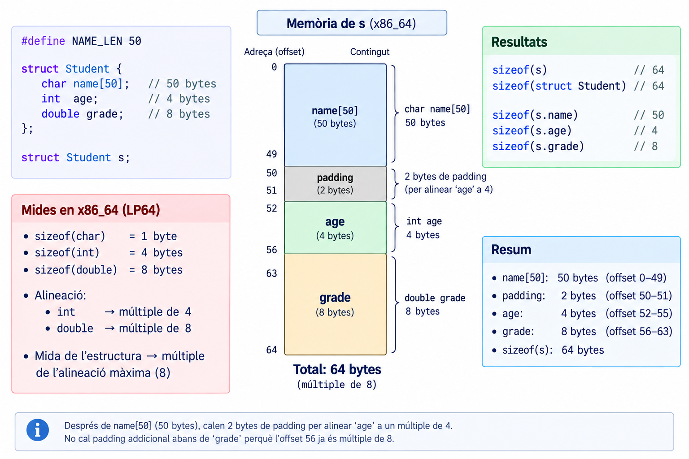
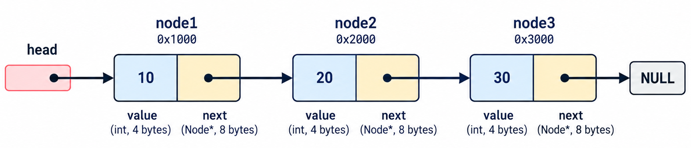
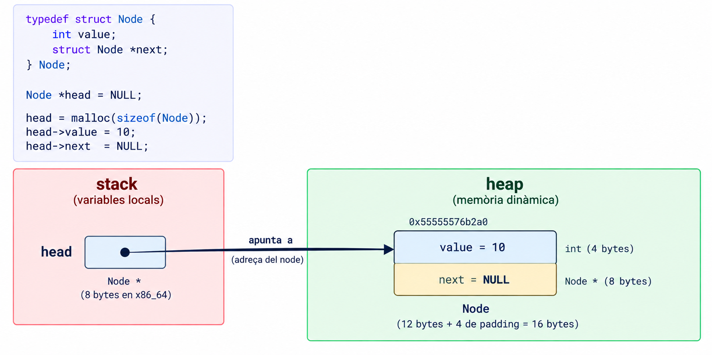
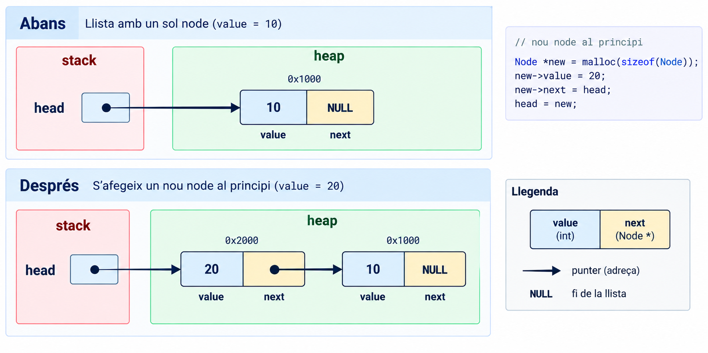
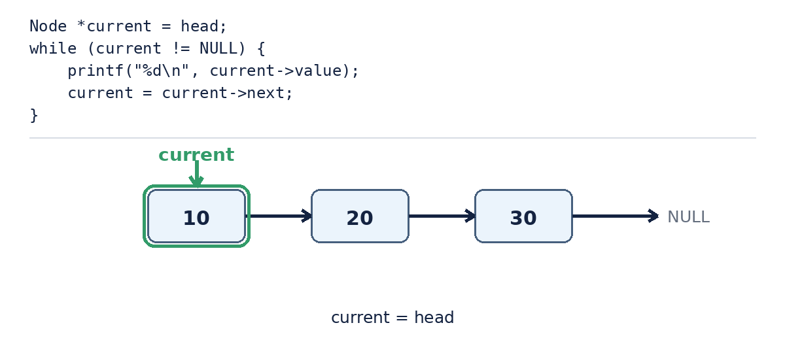

struct, typedef, enum i linked lists
struct · typedef · enum · linked lists
struct i distingir tipus de variabletypedefenumstruct amb punters (. vs ->) i memòria dinàmica (malloc).h/.c/Makefilemalloc/free, ownership.int **..h = interfície / .c = implementació, Makefile.Què passa quan aquestes variables formen part de la mateixa entitat?
Imagina que volem representar un estudiant amb nom, edat i nota. Podem fer-ho amb tres variables separades: name, age i grade. Però això no és gaire pràctic.
Una struct permet agrupar diferents dades sota una mateixa estructura.
Això no crea cap Student. Defineix un tipus.
Ara sí, hem instanciat el tipus.
struct Student{...} \(\Rightarrow\) defineix \(\Rightarrow\) tipus \(\Rightarrow\) struct Student s instanciem \(\Rightarrow\) la variable s
Què representa s.age?
El camp age de la variable s. L’operador és .

Podem crear un àlies:
Una struct defineix un tipus. Un typedef dóna un àlies a un tipus existent, és a dir, dóna un altre nom a un tipus ja existent. Això és útil per fer el codi més llegible i concís.
Però només volem: IDLE, RUNNING, STOPPED.
enum permet donar noms a un conjunt de constants enteres relacionades.
Un enum no impedeix assignar-hi qualsevol enter: state = 42; compila igualment. Millora la llegibilitat i la intenció del codi, no és una restricció imposada pel compilador.
Per defecte: IDLE = 0, RUNNING = 1, STOPPED = 2.
El compilador associa valors enters als enumeradors. Nosaltres normalment treballem amb els seus noms, no amb els números.
struct + typedef i enum + typedef són dos patrons que trobareu constantment en C.
. vs ->p->age és equivalent a (*p).age.
Per tant, quan tenim un punter a una struct, utilitzem -> per accedir als camps. Si tenim la struct directament, utilitzem ..
Student s → s.ageStudent *p → p->ageLa funció rep una còpia completa de l’estructura.
A diferència d’un array, que decau a punter quan es passa a una funció, és a dir, es passa l’adreça del primer element, una struct no decau, es copia sencera, camp a camp. sizeof(s) dins de la funció torna a donar la mida completa, no la d’un punter.
main ──&student──► change_grade() ──s->grade──► mateixa memòria
Passar l’adreça evita la còpia i permet modificar l’original.
Què passa si no sabem quants estudiants tindrem?
Recordeu que malloc retorna un punter a la memòria reservada al heap. El punter viu a la stack i apunta a objectes del tipus Student la memòria del heap.
Qui és responsable d’alliberar aquesta memòria?
El programa.
Imaginem que volem guardar un nombre variable d’estudiants, i que volem afegir-ne sense haver de reservar un array de mida fixa. I a més, volem que cada estudiant conegui el següent.
[10] → [20] → [30] → NULL
Una llista enllaçada (linked list) és una estructura de dades que permet afegir i eliminar elements de manera eficient, sense necessitat de redimensionar un array. Cada element (o node) conté les dades i un punter al següent node.
Una struct pot contenir un punter a una altra struct del mateix tipus.
Per què struct Node (amb nom) i no una struct anònima com al patró de Student?
Perquè dins del propi cos (struct Node *next;) encara no existeix cap typedef complet a què referir-se, només el tag struct Node. Aquest ja és prou vàlid com a tipus, perquè només en necessitem un punter (la mida d’un punter no depèn de la mida d’allò a què apunta).

On són aquests nodes?
La variable head és a la stack. Els nodes són al heap.



current = current->next no mou el node. Mou el punter.
No podem fer free(head) i després llegir head->next — seria exactament un punter penjat, el mateix concepte del Pralab 03. Per això guardem next abans de fer free.
project
├── main.c
├── linkedlist.c
├── linkedlist.h
└── Makefiletypedef struct Node Node; és un tipus incomplet (forward declaration): declara que Node existeix, sense dir encara com és per dins.
QUI inclou linkedlist.h no pot accedir a node->value directament, perquè el compilador no en coneix els camps. Només pot fer servir les funcions que oferim. És una primera mostra real d’encapsulació. El tipus viu a la llibreria, els usuaris de la llibreria veuen només un opaque type.
Node **head no és cap concepte nou: és exactament el mateix patró d’int ** del Pralab 04 (out-parameter, perquè la funció pugui modificar el head del cridant), amb Node en lloc d’int.
struct agrupa dades relacionades sota un mateix tipus; typedef li dona un àlies.enum expressa un conjunt tancat de valors amb noms, per llegibilitat, no com a restricció imposada.struct es copia sencera en passar-la a una funció (no decau com un array); passar-hi un punter evita la còpia.struct autoreferenciada + malloc per crear una estructura de mida variable al heap..h/.c permet amagar la implementació, no només organitzar el codi.